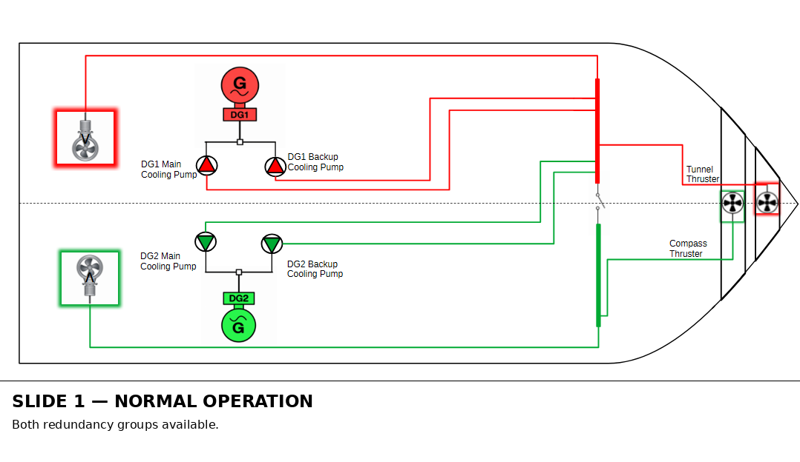
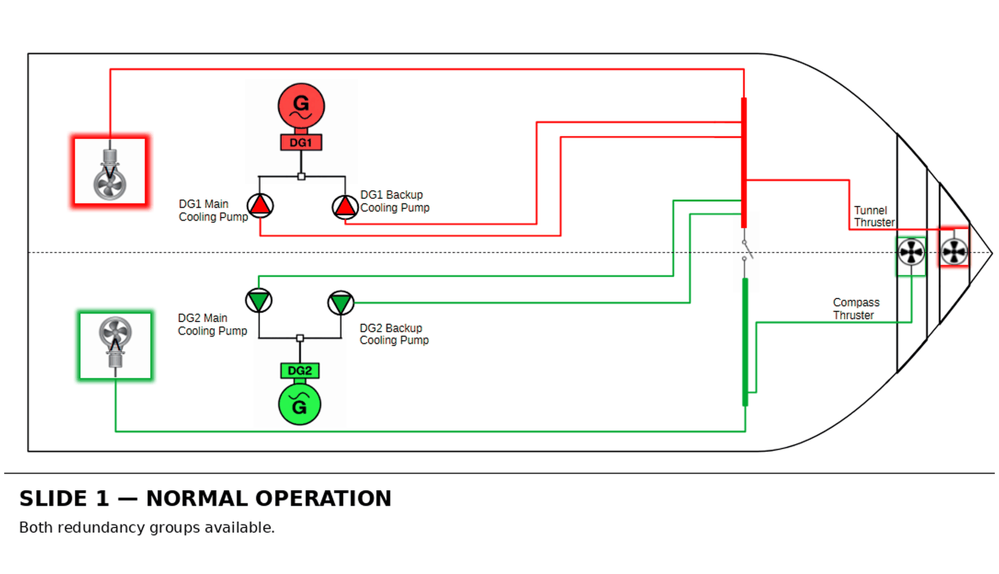

A fundamental principle of a DP2 vessel is that a single failure should not result in the loss of position. To achieve this, the vessel's power, propulsion and control systems are divided into redundant groups so that the loss of one group leaves sufficient capability in the remaining group.
However, there can be an important difference between the Worst Case Failure (WCF) and the Worst Case Failure Design Intent (WCFDI).
The simplified example below demonstrates how a relatively straightforward cross-connection can defeat the intended redundancy concept.
The Design Intent
The vessel is divided into two redundancy groups:
- Port redundancy group — shown in red
- Starboard redundancy group — shown in green
Each redundancy group has its own generator, switchboard, generator cooling pumps and thrusters.
The design intent is straightforward. A failure of the Port switchboard should result in the loss of the Port redundancy group only. DG1 and the Port-associated thrusters would be lost, while DG2 and the Starboard thrusters would remain available.
The vessel should therefore retain power and propulsion following the defined single failure.
The Cross-Connection
Now consider a simple design error.
DG2 belongs to the Starboard redundancy group. Its main and standby cooling pumps also belong to the Starboard redundancy group and are therefore shown in green.
However, both DG2 cooling pumps have accidentally been electrically supplied from the Port switchboard, shown by the red supply connections in the diagram below.

The cooling pumps therefore belong to the Starboard redundancy group but receive their electrical power from the opposite redundancy group.
This cross-connection defeats the intended segregation between the two systems and creates a dependency of the Starboard redundancy group on the Port electrical system.
What Happens When the Port Switchboard Fails?
The animation below follows the resulting failure sequence.

Initially, the failure appears to behave as expected. Loss of the Port switchboard causes the loss of DG1, its associated auxiliaries and the Port thrusters.
But the failure does not stop at the redundancy-group boundary.
Because both DG2 cooling pumps are also supplied from the Port switchboard, they lose power at the same time.
DG2 may initially continue to operate, but without its required cooling it cannot remain available indefinitely. Loss of cooling therefore results in the eventual shutdown or loss of DG2.
With DG2 no longer available, the Starboard electrical system subsequently loses its generating source and the remaining Starboard thrusters are lost.
The result is a full blackout.
Worst Case Failure vs. Worst Case Failure Design Intent
This example demonstrates an important distinction.
The Worst Case Failure Design Intent describes the failure that the redundancy concept is intended to withstand. In this example, that is the loss of one switchboard and its associated redundancy group while the opposite redundancy group remains available.
The actual Worst Case Failure, however, must be determined from the real system architecture and its dependencies.
Because of the cross-connection, loss of the Port switchboard is no longer contained within the Port redundancy group. It propagates into equipment belonging to the Starboard redundancy group and ultimately results in the loss of both groups.
Why This Matters in a DP FMEA
A DP FMEA cannot simply confirm that equipment has been assigned to separate redundancy groups.
The analysis must establish the actual dependencies and supply paths of that equipment.
A component may belong to the Starboard redundancy group, but if an auxiliary essential to its continued operation is supplied from the Port system, the required independence between the redundancy groups has not been achieved.
The same principle can apply to many supporting systems, including cooling, lubrication, fuel supply, ventilation, control power, UPS supplies, automation, communications, hydraulics and other common or supporting services.
This is one of the fundamental purposes of DP FMEA analysis and proving trials: to determine whether the vessel's actual system behaviour under failure matches its stated Worst Case Failure Design Intent.